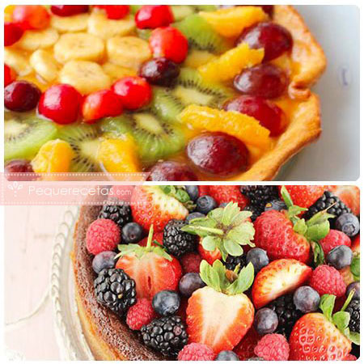
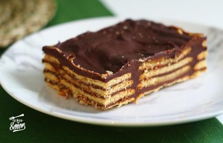

Recetas de Tartas - 576 recetas
 Descubre Aperitivos y tapas Arroces y cereales Aves y caza Carne Cócteles y bebidas Consejos de cocina Ensaladas Guisos y Potajes Huevos y lácteos Legumbres Mariscos Pan y bollería Pasta Pescado Postres Salsas Sopas y cremas Verduras Recetas Postres Tartas
Recetas de Tartas
(576) Tenemos las mejores recetas de Tartas. Aquí encontrarás las recetas de Tartas que estás buscando listas para cocinar. Filtrar resultados Filtrar por: Tipo Receta 572 Vídeo 4 Dificultad Muy baja 2 Baja 359 Media 147 Alta 10 Muy alta 1 Para Postre 435 Cumpleaños 27 Merienda 7 Categoría Postres 576 Tartas 576 Masa para tartas 244 Tarta de galletas 204 Tarta de chocolate 198 Tartas de queso 176 Tarta fría 136 Tarta de frutas 128 Tarta de fresa 82 Cheesecake 78 Tarta de cumpleaños 55 Pie 53 Duración 10m 3 15m 28 30m 97 45m 137 1h 30m 113 2h 30m 29 3h 25 4h 29 6h 14 8h 5 24h 8 Propiedades Sin gluten 17 Sin lactosa 10 Sin azúcar 11 Sin sal 8 Alimentación Vegetarianos 11 Veganos 11 Perder peso 4 Destinada Niños 39 Deportistas 1 Cocción Al horno 217 En frío 152 Thermomix 36 Hervido 19 Baño María 5 Sin cocción 4 Al microondas 2 Temporada Navidad 17 Primavera-Verano 12 Otras fiestas 11 Otoño-Invierno 10 Halloween 4 San Valentín 4 Día del Padre 2 Semana Santa 2 Día de la Madre 1 País Argentina 12 Venezuela 8 España 7 Chile 6 Alemania 5 Colombia 5 Estados Unidos 5 Francia 5 México 5 Italia 3 Brasil 2 Perú 2 Rusia 2 Uruguay 2 Australia 1 Austria 1 Cuba 1 Ecuador 1 Hungría 1 Japón 1 Malasia 1 Nicaragua 1 Región Antioquia 3 Asturias 1 País Vasco 1 Nivel de picante Nada picante 10 Poco picante 1 Coste Barato 310 Medio 175 Caro 4 Bebida Zumo natural 17 Vino dulce 9 Vino blanco 5 Refresco 4 Cava 2 Licor 1 Vino rosado 1 Vino tinto 1 Dificultad baja Receta de Tarta de cuajada y sobaos Dificultad baja 8 30m Postre Esta tarta de cuajada y sobaos es uno de los postres más rápidos y sencillos de preparar, no tienes excusa. Con tan solo 4 ingredientes y media hora de tu tiempo puedes elaborar este delicioso pastel, con una textura muy cremosa y suave. Además, no hace falta que tengas nociones de repostería, tan solo Dificultad baja Receta de Tarta tres chocolates sin nata Dificultad baja 10 1h 30m Cumpleaños Esta receta de tarta tres chocolates sin nata es de las más buscadas en las redes, pues nadie se resiste al chocolate y a la pinta que tiene esta tarta. En realidad lleva unos ingredientes sencillos, y su realización en sí no es otra que montar tres chocolates en la misma medida sobre un fondo de galletas Dificultad baja Receta de Marquesa de Oreo Dificultad baja 6 4h Postre Las galletas Oreos son unas de las galletas más populares del mundo. Varias generaciones asocian su infancia a estas galletas de chocolate rellenas de cremita. Por esta razón, también se popularizaron varias recetas que tienen a las galletas Oreo como ingrediente principal, como los helados de Oreo, merengadas, Dificultad baja Receta de Marquesa de parchita Dificultad baja 8 4h Postre La parchita es una de las frutas tropicales por excelencia. Originaria de Centro y Suramérica, es conocida por varios nombres: maracuyá, parcha y chinola. Es en Venezuela donde le dicen parchita y en inglés recibe el sugestivo nombre de passion fruit o “fruto de la pasión”. La parchita es una fruta excelente Dificultad media Receta de Tarta de ricota y dulce de leche Dificultad media 5 1h 30m Postre Tarta de ricota y dulce de leche, una tarta originaria de Italia y también de Argentina, de manera que se puede decir que esta tarta es una fusión entre los dos países. Es una tarta deliciosa, ya que el queso ricota es muy suave y aporta una textura increíble. Además, se prepara con poca cantidad de Dificultad baja Receta de Tarta de castañas y queso Dificultad baja 6 45m Postre En la repostería, las tartas son todo un mundo de sabores, texturas y variedades. Hay muchísimas recetas por probar y preparar, así que en esta ocasión probamos preparar una receta de tarta de castañas y queso. Perfecta para aprovechar el otoño y la temporada de castañas, estamos seguros de que esta tarta Dificultad media Receta de Tarta de calabaza sin horno Dificultad media 5 45m Esta tarta de calabaza sin horno es un postre delicioso, fácil y rápido de preparar. Por su cremosidad y su suavidad con todo el sabor del otoño, la calabaza es estupenda para hacer recetas dulces. Además, es fácil de cocinar, así que es una alternativa perfecta para preparar durante la temporada. Si te Dificultad baja Receta de Pay de mango frío sin horno Dificultad baja 8 2h 30m Postre El mango en postres se vuelve cada vez más versátil. En México nos encanta esta fruta con chile y limón, con crema o en ricos pasteles. Esta vez, para los amantes del mango, RecetasGratis trae una rica receta de pay de mango, pero no es cualquier pay, ya que este no necesita hornearse y además su preparación Dificultad baja Receta de Pay de calabaza Dificultad baja 4 45m Postre El pay de calabaza, o pumpkin pie, es una deliciosa tarta tradicional americana que se prepara en Halloween y/o Navidad. Lo que hace que esta tarta sea tan especial es la combinación de calabaza y especias, que permite que no quede muy dulce, que su textura sea cremosa y su sabor delicioso. La calabaza Dificultad media Receta de Tarta de melocotón en almíbar Dificultad media 8 6h Postre Uno de los platos más conocidos en el mundo es el que se elabora con una tartaleta, es decir, una base de masa cocida que tiene forma de plato o recipiente. Se puede utilizar en preparaciones saladas o dulces, aunque en postres suele ser más popular. La tartaleta se hace con una pasta que es, a pesar de Dificultad baja Receta de Tarta de higos Dificultad baja 8 45m Postre El aroma de los higos a finales de verano es fragante, no pasa desapercibido cuando paseamos por parques o jardines y pasamos por delante de una higuera con bellas hojas verdosas y sus higos en pleno auge Para aprovechar todas las bondades de esta fruta en su mejor temporada, es normal que busquemos Dificultad muy baja Receta de Tarta de queso de La Viña (San Sebastián) Dificultad muy baja 6 45m Merienda La famosa tarta de queso de La Viña, también conocida como cheesecake de San Sebastián, es un famoso postre reconocido como una de las mejores tartas. Su elaboración es muy sencilla, así como es increíble el resultado, pues queda jugosa, untuosa y deliciosa. Podrás disfrutar de esta tarta en el desayuno Dificultad media Receta de Carlota de mango Dificultad media 8 24h Postre La carlota o charlotte, en su nombre francés, es un postre típico galo que se caracteriza por llevar una base de bizcocho o galletas, con un relleno tipo mousse. Se sirve frío, es fácil de hacer y queda delicioso. Este postre puede hacerse de varios sabores, aunque la carlota más popular en todo el mundo Dificultad media Receta de Pie de parchita Dificultad media 6 45m Esta receta de pie de parchita es un must de los postres venezolanos que debes probar al menos una vez en tu vida si te gusta ese contraste de ácido y dulce tan típico de otros postres como el pie de limón. La parchita, también conocida como maracuyá o fruta de la pasión, es una fruta rica en Vitamina Dificultad baja Receta de Tarta de leche condensada y chocolate Dificultad baja 8 45m Postre Si te gustan los postres con leche condensada y galletas, ¡esta receta te encantará! Esta tarta de leche condensada y chocolate es una tarta horneada pero sencilla, con una rica base de galletas, donde podrás utilizar tus galletas preferidas. Además, va rellena de una riquísima crema de leche condensada Dificultad baja Receta de Tarta de leche condensada Dificultad baja 6 4h Postre Si buscas una tarta sencilla, sin horno y deliciosa, ¡esta tarta de leche condensada es lo que necesitas! Con unos ingredientes sencillos que podemos encontrar con facilidad, este postre de leche condensada queda muy bueno, con un sabor suave y un contraste de la leche con la galleta que te encantará. El Dificultad baja Receta de Tarta de piña con leche condensada Dificultad baja 8 2h 30m Postre La tarta de piña con leche condensada es una tarta fresca, con una textura suave y un delicioso sabor a piña. A pesar de llevar leche condensada entre sus ingredientes, no es una tarta pesada, ideal para finalizar con ella cualquier comida familiar. Su elaboración es sencilla y queda mejor consumida de un Dificultad media Receta de Tarta de pan duro Dificultad media 8 1h 30m La tarta de pan duro es un rico postre tradicional que quizás algunos desconozcan. Se trata de una receta que da como resultado una mezcla entre bizcocho y flan, una tarta con una textura melosa y el sabor inconfundible del caramelo líquido con el que se acompaña cada bocado. ¿Lo mejor de todo? Es una Dificultad baja Receta de Tarta de yogur y fresas Dificultad baja 6 30m Postre Tarta de yogur y fresas sin horno, una riquísima tarta que podemos preparar en poco tiempo y tener un estupendo postre. Además, con esta receta podemos aprovechar las fresas naturales cuando están de temporada y disfrutar, así, de todas sus cualidades. Si nunca antes has probado esta combinación, debes Dificultad baja Receta de Tarta de queso y limón Dificultad baja 6 45m Postre Tarta de queso y limón, sin gluten y sin gelatina, fácil y rápida de hacer. Este es el postre perfecto para después una comida familiar o con amigos, ya que es una tarta deliciosa y realmente sencilla de preparar, con pocos ingredientes y sin harina de trigo, ideal para celíacos. Las tartas de queso Dificultad baja Receta de Tarta de nata y cuajada Dificultad baja 10 30m Postre Esta receta de tarta de nata y cuajada es ideal para la época estival, ya que se toma bien fresquita, pero cualquier época del año es fabulosa para poder disfrutarla. Es una elaboración sencilla, por lo que si no eres muy cocinillas, no vas a encontrar problemas al realizarla. Lleva pocos ingredientes Dificultad media Receta de Tarta de almendras de la abuela Dificultad media 10 1h 30m Postre Como las tartas de la abuela no hay nada, su sabiduría en la cocina resiste el tiempo y, por eso, en RecetasGratis rescatamos esta receta de tarta de almendras de la abuela para que siempre podamos visitar los sabores más tradicionales y hogareños, así como los recuerdos más felices. Al prepararla, Dificultad baja Receta de Tarta de almendra casera Dificultad baja 8 45m Merienda Hay muchos tipos de tartas de almendra, pero todas suelen llevar en común la sustitución de la harina común por almendra molida, consiguiendo una tarta apta también para celíacos. La tarta de almendra se conserva muy bien, dado que lleva una buena proporción de azúcar, que hace que se conserve perfectamente Dificultad baja Receta de Cheesecake de frutos rojos Dificultad baja 8 2h 30m Postre Los frutos rojos o frutas del bosque son bayas pequeñas muy deliciosas que, antes de cultivarse, solían crecer en arbustos silvestres. Se utilizan para todo tipo de preparaciones y postres, pues su sabor dulce y ácido los hace muy populares. Si te encantan las frutas del bosque, esta receta de cheesecake de Especial Navidad Receta de Tarta de turrón y chocolate Dificultad baja Especial Navidad 6 1h 30m Postre Tarta de turrón y chocolate, la combinación perfecta para un postre estupendo. Esta es una tarta sencilla de preparar e ideal para terminar una buena comida. El turrón y el chocolate combinan muy bien y junto con la base de galletas hacen que sea una tarta deliciosa. Esta receta también nos puede valer Dificultad baja Receta de Tarta de dulce de leche Dificultad baja 8 45m Postre Tarta de dulce de leche, una tarta sencilla, rica y sin horno. Sin duda, esta es una tarta que si la probáis repetiréis, ya que queda muy buena, jugosa y con un sabor suave a dulce de leche. Nosotros no le ponemos azúcar porque el dulce de leche lleva bastante, aunque cabe destacar que al llevar leche y Dificultad baja Receta de Tarta de castañas Dificultad baja 6 45m Postre Tarta de castañas muy fácil de hacer, deliciosa y sin horno. Aprovechando el tiempo de castañas, que es muy corto, hemos preparado esta tarta que es toda una delicia, además de sencilla y suave en cuanto a textura. Esta tarta está preparada con crema de castañas que, aunque es fácil encontrarla ya hecha, Dificultad media Receta de Tarta de frutos rojos Dificultad media 6 2h 30m Los frutos rojos, también llamados frutos del bosque, son bayas saludables y muy aconsejadas para perder peso, pues cuentan con muy pocas calorías y aportan una gran cantidad de vitaminas al organismo. Podemos preparar un montón de recetas con ellos (salsas, ensaladas, postres) y esta vez te traemos una receta Dificultad baja Receta de Tarta de chocolate sin horno Dificultad baja 6 30m Postre Esta tarta de chocolate sin horno fácil y rápida será perfecta para cuando quieras preparar un postre frío que complazca a todos. La consistencia de 3 capas de esta tarta es lo mejor de esta preparación: tiene una base crujiente, un relleno suave y una cobertura dura. Para hacer que esta tarta de chocolate Dificultad baja Receta de Masa de tarta dulce Dificultad baja 4 45m ¿Cuál es la mejor masa para tartas dulces? Sin duda, esta es una de las preguntas más frecuentes que se plantean todas aquellas personas que se inician en el fascinante mundo de la repostería. Pues bien, resulta complicado escoger una como la mejor debido a que existen infinidad de masas, cada una pensada Dificultad baja Receta de Tarta de chocolate con cuajada Dificultad baja 10 24h Postre Qué fácil te va a resultar hacer esta tarta de chocolate con cuajada, ideal para los amantes del chocolate, sin apenas cocción y con pocos ingredientes para su elaboración. No hace falta que tengas nociones de repostería, tan solo tienes que seguir el paso a paso que en RecetasGratis compartimos con todo detalle. Esta Dificultad baja Receta de Tarta de yogur griego Dificultad baja 4 45m Postre Tarta de yogur griego, una tarta muy buena, suave y sencilla de preparar. Para hacer esta tarta de yogur griego necesitamos pocos ingredientes, todos ellos comunes en la mayoría de despensas, por lo que es un postre económico. Aunque a simple vista parezca que esta tarta lleva queso, lo cierto es que no. Dificultad baja Receta de Tarta de tres chocolates Dificultad baja 8 1h 30m Postre La tarta de tres chocolates es toda una delicia para los amantes del chocolate porque combina los tres tipos principales: chocolate negro, chocolate con leche y chocolate blanco. Aunque el proceso es un tanto largo porque hay que cocinar cada una de las capas por separado, en su conjunto se trata de una tarta Dificultad baja Receta de Pastel de coco Dificultad baja 8 1h 30m Este delicioso pastel de coco, al que también se le conoce como atrapa maridos, es delicioso y muy vistoso, no cabe duda de que podría ser una excelente forma de conquistar o reconquistar a tu amor. Y si no vas en busca del amor, pues también es un pastel ideal para compartir con amigos o para prepararte Dificultad baja Receta de Tarta de la abuela Dificultad baja 8 45m La tarta de la abuela, también conocida como tarta de flan con galletas y chocolate o tarta de galletas de la abuela, es una tarta tradicional casera, de esas que preparaban nuestras abuelas para consentirnos. Es un postre perfecto para cumpleaños, fiestas o aniversarios, pues todos han escuchado de esta Dificultad baja Receta de Tarta de calabaza y queso Dificultad baja 6 1h 30m Es otoño, así que ya podemos encontrar muchos tipos de calabazas en las fruterías y mercados, bien sean para disfrutar en ricas recetas o para tallarlas con los niños en Halloween. Las calabazas son alimentos muy versátiles, pues sirven para hacer recetas tanto dulces como saladas. Su sabor es inconfundible Especial Navidad Receta de Pasta frola de batata Dificultad baja Especial Navidad 6 1h 30m Postre La pasta frola tradicional es una tarta compuesta por una base de masa dulce similar a la masa quebrada y un relleno hecho con dulce de membrillo. Debido a su popularidad, actualmente son muchas las versiones que existen de este delicioso postre, como la que compartimos a continuación. La batata, conocida Dificultad baja Receta de Tarta de galletas y chocolate de la abuela Dificultad baja 10 45m Postre La tarta de la abuela tradicional se elabora a base de galletas y flan. Sin embargo, es tal su popularidad que, hoy en día, existen distintas versiones de este mismo postre. Una de ellas es la tarta de galletas y chocolate que compartimos a continuación. En lugar de flan vamos a hacer natillas de vainilla, Dificultad baja Receta de Pasta frola con aceite Dificultad baja 8 45m Postre La pasta frola es una masa típica de países como Argentina, Paraguay y Uruguay. Es imprescindible para rellenar tartas artesanales. Se prepara muy fácilmente, pues en solo una media hora la tendrás lista y con ella podrás tener una tarta fantástica para compartir con la familia. La pasta frola tradicional Dificultad media Receta de Tarta de queso con cuajada Dificultad media 12 2h 30m Postre Si estás buscando un postre delicioso y que no requiera de horno para su elaboración, estás en el lugar indicado. Esta receta de tarta de queso con cuajada que te traemos en RecetasGratis es una buena opción para varios comensales, fácil de preparar y muy rica. Los ingredientes tan característicos de esta 1 2 3 4 5 > Recetas Postres Tartas Volver arriba Redes sociales © recetasgratis.net 2021 Quiénes somos Contacta con nosotros Términos y Condiciones Política de privacidad Política de cookies